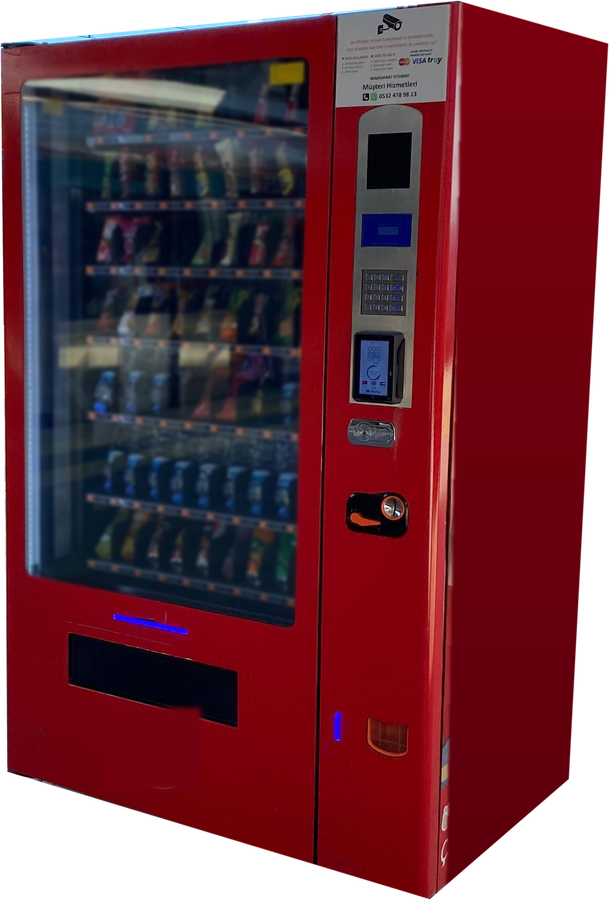
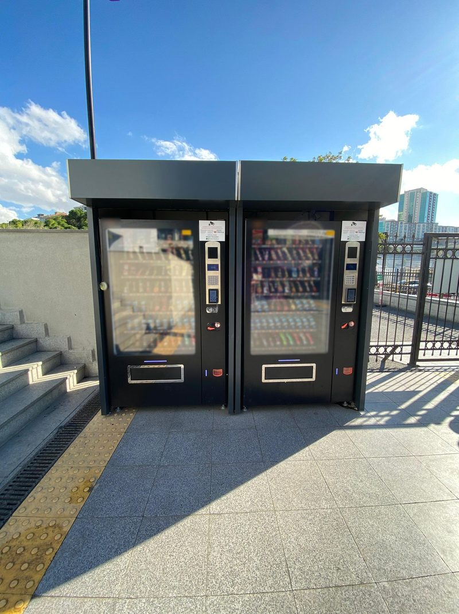

نصب دستگاه
دستگاههایمان را روی سکوها، کنار ورودی ایستگاهها و در نقاط تعویض خط نصب میکنیم تا بهراحتی به آنها دسترسی داشته باشید.
نوشیدنی سرد، تنقلات، تُست، چای و قهوه در ۴۳ ایستگاه از هالکالی تا گبزه. Marmaray Otomat هر روز محصولات تازه را با پرداخت سریع و آسان به مشتریان عزیز خود ارائه میکند.




تنقلات و نوشیدنی سرد
Marmaray Otomat با دستگاههای فروش خودکار مدرن، خدماتی سریع، باکیفیت و قابل اعتماد ارائه میدهد. با ۱۲۶ دستگاه در هر ۴۳ ایستگاه مرمرای، هر روز محصولات تازه و متنوع به مسافران میرسانیم.
از دستگاههای ما بهصورت شبانهروزی نوشیدنی سرد، تنقلات، ساندویچهای تازهٔ روزانه، تُست، چای و قهوه تهیه کنید و با کارت اعتباری، کارت بانکی، QR یا İstanbulkart بپردازید. با استانداردهای بهداشت و کیفیت، رضایت مشتری همیشه در اولویت ماست.
Marmaray Otomat یکی از خدمات Aykar است.
از سکوها تا ورودیها، در هر نقطه از سفر مرمرای کنار شما هستیم.
دستگاههایمان را روی سکوها، کنار ورودی ایستگاهها و در نقاط تعویض خط نصب میکنیم تا بهراحتی به آنها دسترسی داشته باشید.
نوشیدنیهای سرد، تنقلات، تُست و نوشیدنیهای گرم را مرتب تازه میکنیم. ساندویچها هر روز تازه میرسند.
درخواستها و شکایتهای شما برای ما مهم است. با اسکن کد QR روی دستگاه در چند ثانیه با ما تماس بگیرید؛ هر گزارش را جداگانه بررسی میکنیم.
تاریخ انقضای محصولات را بررسی میکنیم و دستگاهها را تمیز و مرتب نگه میداریم.
استفاده از دستگاههای ما سه مرحله دارد. روش پرداخت خود را انتخاب کنید و مراحل را دنبال کنید.
شمارهٔ روی قفسهٔ محصول دلخواه را وارد کنید. محصول و قیمت روی صفحه نمایش داده میشود.
کارت اعتباری را به کارتخوان نزدیک کنید (بدون تماس) یا وارد کنید. در صورت نیاز رمز را بزنید.
کارت بانکی را به کارتخوان نزدیک کنید (بدون تماس) یا وارد کنید. در صورت نیاز رمز را بزنید.
کد QR روی صفحه را با اپلیکیشن بانک خود اسکن کنید و پرداخت را تأیید کنید.
İstanbulkart را به کارتخوان نزدیک کنید تا مبلغ از موجودی کسر شود.
پس از تأیید پرداخت، محصول در محفظهٔ پایین میافتد. اگر مشکلی پیش آمد، کد QR روی دستگاه را اسکن کنید و برای ما بنویسید.
این انیمیشن صرفاً نمایشی است؛ صفحهٔ دستگاه ممکن است متفاوت باشد.
در هر ۴۳ ایستگاه از هالکالی تا گبزه در مجموع ۱۲۶ دستگاه داریم: نوشیدنی سرد، تنقلات، ساندویچ تازه، تُست داغ، چای و قهوه، با پرداخت کارتی، QR یا İstanbulkart.
روی نقطهای از خط بزنید تا نقشه آن ایستگاه را نشان دهد.
ایستگاهی با این نام پیدا نشد.
روی یک ایستگاه بزنید تا روی نقشه نمایش داده شود. باز کردن در Google Maps
کارت اعتباری، کارت بانکی، پرداخت با QR و İstanbulkart. برای توضیح گامبهگام راهنمای استفاده را ببینید.
کد QR روی دستگاه را اسکن کنید تا ایستگاه و دستگاه بهطور خودکار در فرم ثبت شود. شکایت خود را بفرستید؛ بررسی میکنیم و با شما تماس میگیریم.
لازم نیست بدانید. هر دستگاه کد QR مخصوص خود را دارد و با اسکن آن، ایستگاه و دستگاه خودکار انتخاب میشود. اگر نمیتوانید کد را اسکن کنید، ایستگاه و محل دستگاه را در فرم انتخاب کنید.
ساندویچهای ما هر روز تازه میرسند و دستگاهها روزانه پر میشوند.
دستگاههای ما شبانهروزی کار میکنند. ساعات ورود به ایستگاهها به ساعات کاری مرمرای بستگی دارد.
از فرم پیشنهاد استفاده کنید. پیشنهادهای محصول را در چیدمان قفسهها در نظر میگیریم.
اگر با دستگاههای ما مشکلی داشتید یا محصولی را میخواهید، برای ما بنویسید.
سریعترین راه: کد QR روی دستگاه را اسکن کنید. ایستگاه و دستگاه خودکار انتخاب میشوند.



ساعات کاری: [روزهای کاری 00:00–00:00، شنبه 00:00–00:00]